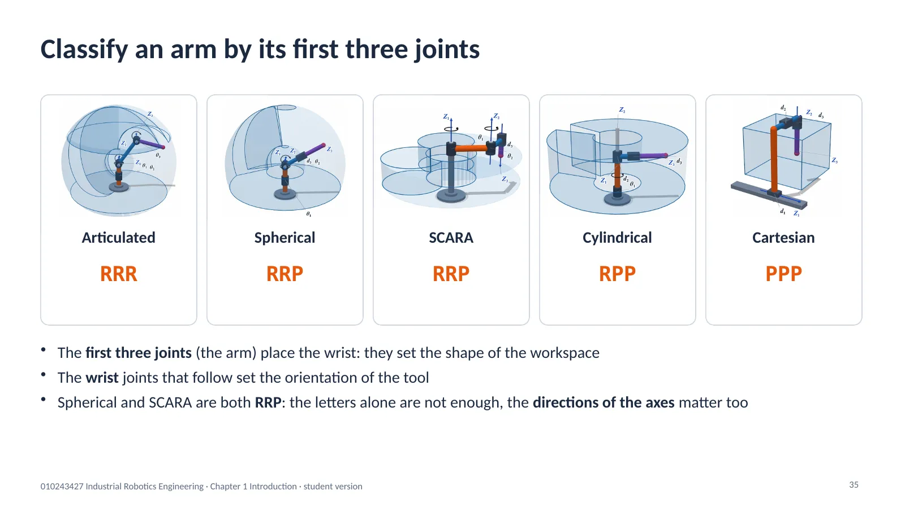
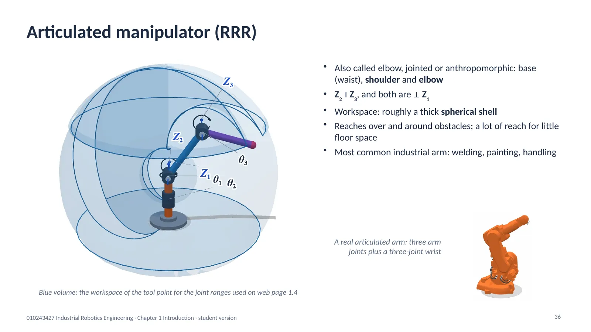
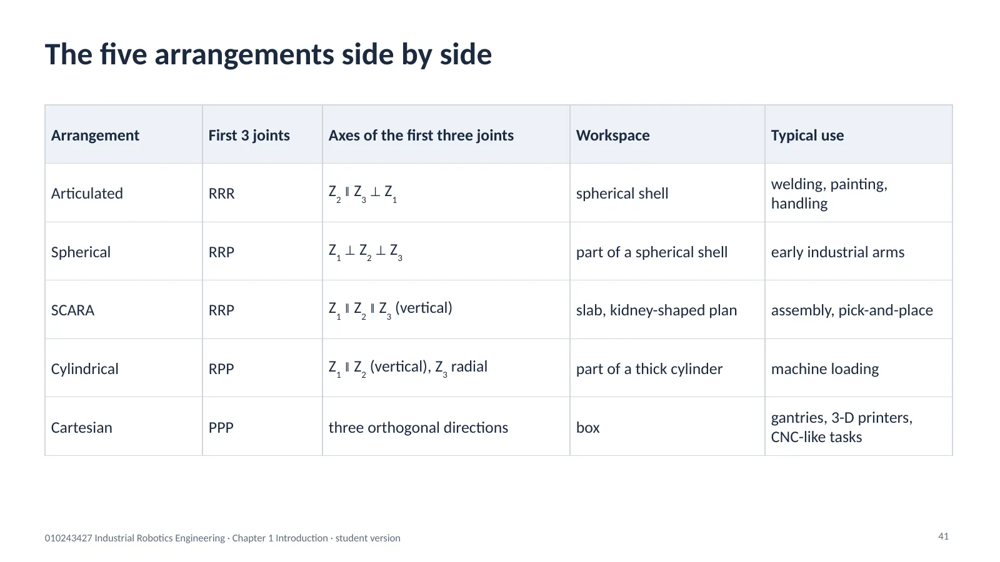
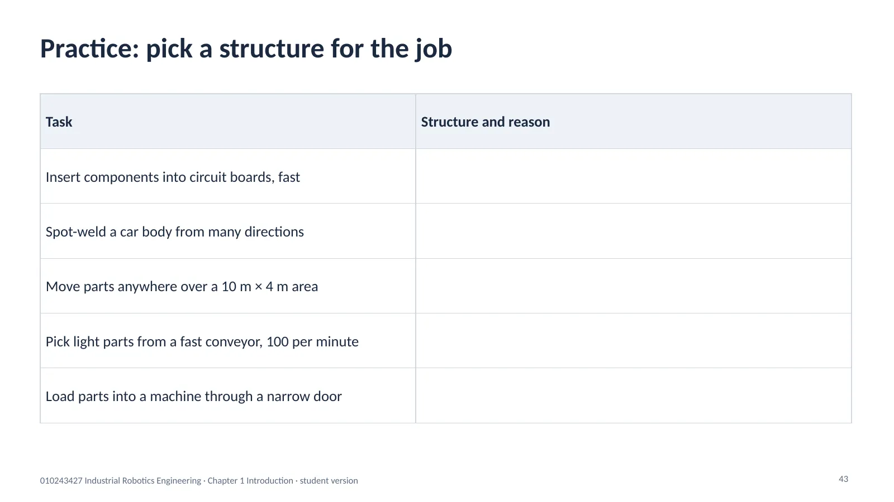
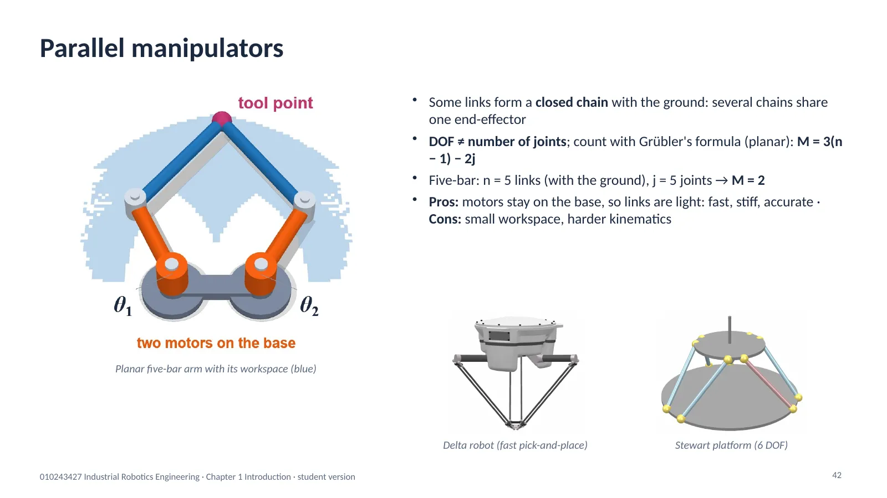

แขนกลอุตสาหกรรมจำแนกตาม สามข้อต่อแรก (โครงสร้างวางตำแหน่ง) ซึ่งกำหนดรูปร่างของปริภูมิทำงาน ข้อมือที่ต่อท้ายกำหนดทิศของเครื่องมือ หน้านี้ครอบคลุมสไลด์หน้า 34–45 มี เครื่องมือ 1 ชิ้น (A) ที่หมุนดูทั้งห้าแบบในสามมิติ และ 3 โจทย์ รวมการบ้านข้อ 1.3
Industrial arms are classified by their first three joints (the positioning structure), which set the shape of the workspace; the wrist after them sets the tool direction. This page covers slides pp. 34–45. It has one tool (A) to turn all five structures in 3-D and 3 problems, including homework 1.3.

ภาพสไลด์ข้างบนเปลี่ยนตามโครงสร้างที่เลือก ลวดสีฟ้าคือขอบของปริภูมิทำงานของจุดปลายแขนเมื่อข้อต่อทั้งสามเคลื่อนที่ครบช่วง ลองเลื่อนข้อต่อทีละตัวแล้วสังเกตว่าปลายแขนวิ่งบนเส้นลวดเส้นไหน
The slide above follows the structure you choose. The blue wires outline the workspace of the tool point as the three joints go through their ranges. Move one joint at a time and see which wire the tool runs along.

อ่านตารางแบบนี้: ยิ่งข้อต่อหมุนมาก แขนยิ่งเอื้อมอ้อมสิ่งกีดขวางได้และใช้พื้นที่ติดตั้งน้อย แต่การคำนวณมุมข้อต่อ (จลนศาสตร์ผกผัน) ยากขึ้น ยิ่งข้อต่อเลื่อนมาก การคำนวณยิ่งง่ายและโครงสร้างแข็งแรง แต่ต้องมีโครงขนาดใหญ่ล้อมพื้นที่ทำงาน คาร์ทีเซียนอยู่สุดปลายข้างหนึ่ง (ตัวแปรข้อต่อคือ x, y, z เลย) ข้อพับอยู่อีกปลายหนึ่ง
Read the table this way: the more revolute joints, the better the arm reaches around obstacles and the less floor it needs, but the harder its joint angles are to compute (inverse kinematics). The more prismatic joints, the simpler the computation and the stiffer the structure, but a large frame must surround the work. Cartesian sits at one end (its joint variables are x, y, z), articulated at the other.

